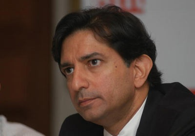

Gautam Thapar belongs to the third generation of the business family founded by his grandfather Karam Chand Thapar, in Kolkata.[3]Karam Chand had initially offered the reins of the family business to Gautum's father, Brij Mohan Thapar, bypassing his oldest son Inder Mohan Thapar. However, Brij Mohan passed on the chance to his younger brother Lalit Mohan Thapar, giving lack of desire and inability to shoulder the responsibility as the reasons.
Gautam was educated at The Doon School. He then studied chemical engineering at Pratt Institute in the United States. When he failed to find a suitable job and found his US visa running out, Gautam returned to India.
Gautam Thapar began his career as a factory assistant in a manufacturing unit of the erstwhile Thapar Group. At this time, Lalit Mohan (a lifelong bachelor), had been grooming Inder Mohan Thapar's son Vikram as his successor. However, Gautam gained Lalit Mohan's attention, and rose rapidly through the ranks. He first turned around the Group's ailing company, Andhra Pradesh Rayons (APR). Then, he nurtured the group company BILT's new export oriented businesses–leather, shoes and foods. Gautam didn't like the group's management style, and made his dissent clear. Impressed with him, Lalit Mohan gave him the responsibility to turn around the BILT's chemical division, which was suffering losses due to labour agitations and shortage of water and power. Gautam showed profits within a year, by scrapping the company's expansion plans, selling off a few assets and dealing firmly with the labour.
The family's assets were divided into four in 1999, with Gautaum's older brother Karan parting ways in 2005. Gautam became the Chairman of Crompton Greaves on 22 July 2004. When Lalit Mohan Thapar retired, he chose Gautam over Vikram. In 2005, he handed over the reins of the business empire to Gautam, along with his voting rights, shares and most of his personal effects in his will.
Gautam Thapar became the Chairman of the Group on 1 July 2006. He is now on the Board of several companies in India and abroad.
Gautam Thapar is President of Thapar University and former Chairman of the Ananta Aspen Centre. He is also on the Board of Governors of his alma mater, the Doon School. In 2010, he took over as the chairman of the board of governors of the Mumbai-based business school NITIE, for a 4-year period.
Gautam Thapar promotes golf and is President of the Professional Golf Tour of India (PGTI). The EUR 1.8m Avantha Masters, tri-sanctioned by the European Tour, the Asian Tour and the Professional Golf Tour of India (PGTI), is today India's richest golf event and synonymous with professional international golf in India. In July 2013, King's College, London conferred an Honorary Fellowship inrecognition of Gautam's 'exceptional achievements in the fields of industry and philanthropy'.